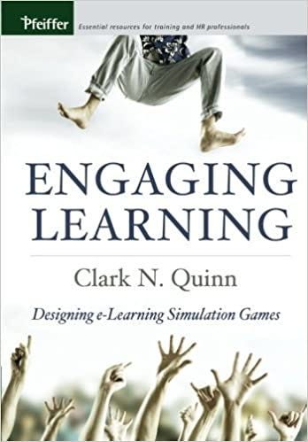
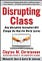
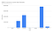
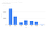
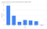
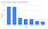
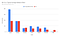

Words and metrics about Education
What school is for?

What is school for is a question that I am trying to answer since I got to understand the importance of this question. School is for not anymore a medium for delivering knowledge because the internet is filled with knowledge of any kind. If content delivery was the only feature of school then we could already assume and say that School has been disrupted by online learning and way before by blogging two-channel that provide knowledge without the limiting factor of physical space that classrooms have. But school is not about content delivery then what’s school is about?
School is now more about status because the grade we get from it like a currency can be converted to a well-paid job maybe in a fortune 500 company but given the level of chomage and underpaid graduate students lot of schools have lost this status that they were providing to students and the increase of automation due the computer revolution keep making this fact worse. Is school a factory for producing compliant workers for the industrial complex or for producing problems solvers and leaders capable of lightning new and more efficient ways of living and doing things? My answer is that school should be better for the world if it was the second kind of factory but I could be wrong in my tentative of answering this difficult question which is what is school for? It is sure that school is not for only producing people like me striking a keyboard every day and publishing short articles online even if people like you can benefit from these cheap words I am producing.
I am in trouble answering this question but you may have some clear points about it. I am not an expert at Education but I have read a lot about how technology can help build a better education system and how schools can be designed to be problem-driven and project-driven and centered on students. The last book I have read about this topic of Education is below

Because I had what I think is a great platform about Education, I was obliged to do my homework by reading about his topic of Education and technology, and late professor Clayton tried to bring a theory about the disruption of university with a book that I have also read

Even with all of these sources of knowledge, I am still unable to have a clear answer for this question that I think we should all try to answer from students to parents all the way up to teachers.
A lot of words have been produced and published online about education. I have tried to collect some metrics about them in my journey of trying to answer this question about school and here they are

If we consider the whole worldwide web, we can see that a lot has been said with the words education, learning, and university but notice how little the words project, school, student, and event MBA are compared to them. Is there any clue about these metrics or maybe the whole worldwide web is too big to be taken into consideration then let’s look at Medium this publication platform. In medium here are the metrics about the words about education I got to collect


Into medium, we can see that the numbers are different. Here the word project has a more important weight and my guess is that it is because of the important number of business persons that make the audience of this platform. Business people like and live with projects to be done then it is obvious for a publishing platform crowded by them to host a huge number of occurrence of this word project but what interesting and what I can’t explain is that here the word School weight more than the word University. If you also have a clue about why such a thing, I would love to learn it from you.
After exploring the words of Education in Medium I narrowed the exploration to myself. I have published more than +500 short articles in Medium and here are the metrics of the words of Education I used in my texts.


Given a typical average Medium writer, I think and hope that I am serving and promoting education because of these metrics but my trouble is not about numbers what I really want to know is what is school for. I have read many times stop stealing dreams but I am still in trouble answering this simple but difficult question.
What is school for?
If you have an answer because you know Education better than me please help.